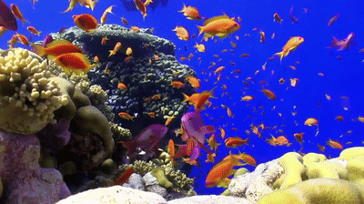

Introduction
The ocean is home to a vast array of creatures, ecosystems, and mysteries. Covering over 70% of the Earth's surface, it plays a crucial role in maintaining life on our planet.

The Importance of Oceans
Oceans regulate our climate, provide oxygen, and support marine life. They absorb carbon dioxide, helping to reduce global warming.

Marine Life
From tiny plankton to massive whales, marine life is diverse and fascinating. Coral reefs, deep-sea trenches, and open waters are home to different species.
Ocean Conservation
Conservation efforts help protect marine biodiversity. Sustainable fishing, reducing plastic waste, and marine reserves contribute to a healthier ocean.

Threats to Oceans
Pollution, climate change, and overfishing are major threats to ocean health. Urgent action is needed to prevent further damage.
How You Can Help
We all have a role to play in protecting our oceans. Reducing plastic use, supporting sustainable seafood, and spreading awareness can make a difference.